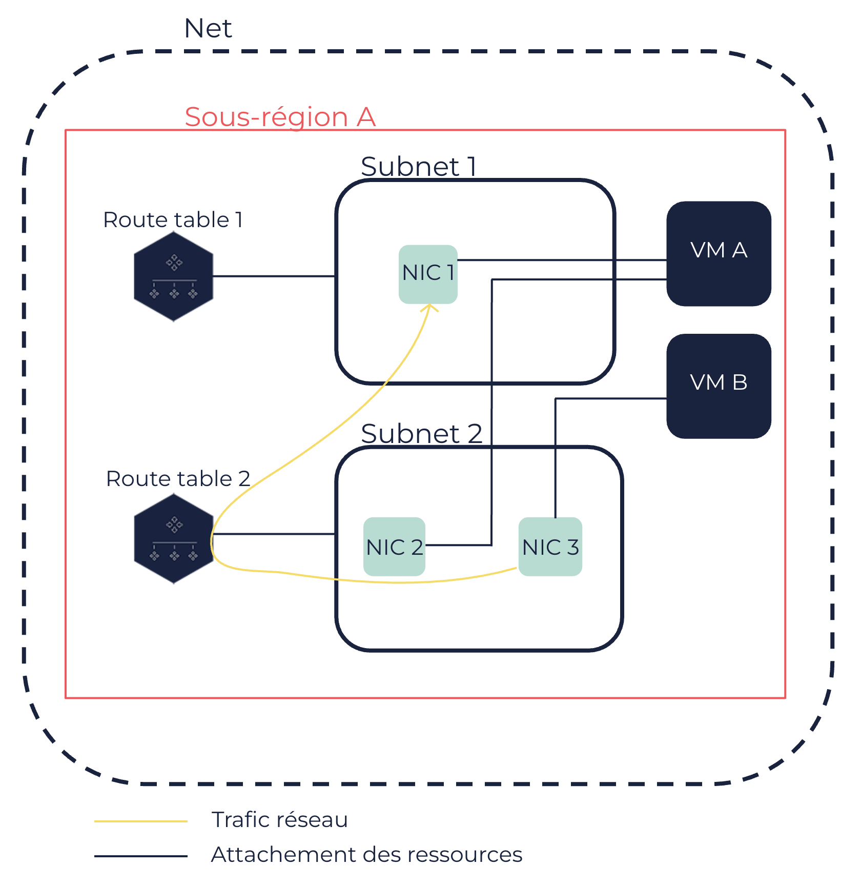

À propos des NIC
Les network interface cards (NIC) sont des interfaces réseau virtuelles additionnelles que vous pouvez attacher à des machines virtuelles (VM) dans un Net. Elles agissent comme des cartes réseau virtuelles vous permettant de fragmenter votre réseau et de rediriger le trafic vers une autre machine virtuelle (VM). Elles peuvent être détachées et attachées à une autre VM à tout moment.
Les NIC ont une ou plusieurs IP privées attribuées, et éventuellement une IP publique.
Interface réseau principale et NIC
Les VM sont créées avec une interface réseau par défaut, avec une IP privée. Cette interface réseau est appelée l’interface réseau principale et ne peut pas être détachée de la VM. Les IP attribuées à une VM sont en réalité attribuées à cette interface réseau principale.
Vous pouvez créer des interfaces réseau additionnelles que vous pouvez attacher à des VM dans un Net ou les détacher, à tout moment. Ces interfaces réseau additionnelles sont appelées network interface cards (NIC). Les NIC permettent aux VM d’être connectées sur plusieurs réseaux. Cela peut par exemple être requis pour des raisons de sécurité si vous souhaitez utiliser différents réseaux pour différents rôles dans votre organisation, ou différents services pour différents clients. Les NIC vous permettent donc de fragmenter le réseau de la VM.
|
Les NIC n’augmentent pas la bande passante du réseau de la VM. |
Le nombre maximum de NIC que vous pouvez attacher à une VM dépend du type de VM. Pour en savoir plus, voir Types de VM.
Attributs des NIC
Une NIC inclut les attributs suivants :
-
Un ID au format
eni-XXXXXX, automatiquement attribué à la NIC lors de sa création. -
(optionnel) Une description.
-
Une IP privée principale, automatiquement attribuée par le serveur DHCP ou que vous pouvez définir manuellement.
-
(optionnel) Une ou plusieurs IP privées secondaires. Ajouter plusieurs IP privées fragmente le réseau de la VM. Cela vous permet également d’avoir plusieurs IP pour une VM. Pour en savoir plus, voir Attribuer des IP privées secondaires à une NIC.
Toutes les IP privées (principales et secondaires) attribuées à une NIC doivent appartenir à la plage d’IP du Subnet dans lequel se trouve la NIC.
-
(optionnel) Une IP publique, via une IP publique attachée à la NIC. Pour en savoir plus, voir Attacher une IP publique à une VM ou à une interface réseau.
Par défaut, les VM dans un Net n’ont pas accès à et ne sont pas accessibles depuis Internet. Pour donner ces accès, vous devez attacher une IP publique à la VM (à l’interface réseau principale) ou à une NIC, une route table au Subnet dans lequel se trouve la VM ou la NIC, et un internet service au Net. Le trafic Internet passe donc de la NIC à Internet via la route table et l’internet service correspondants. Pour en savoir plus, voir Nets.
-
Un ou plusieurs security groups associés à la NIC. Comme les IP attribuées à la VM sont en réalité attribuées à son interface réseau principale, le comportement des security groups est le même pour la VM et pour la NIC. Pour en savoir plus, voir Security Groups.
-
Une adresse MAC (Media Access Control) pour identifier physiquement la NIC.
-
(optionnel) Un flag de vérification source/destination du trafic réseau, pour envoyer ou recevoir du trafic au nom d’une autre VM.
Un nom DNS privé associé à l’IP privée principale est attribué à la NIC. Si vous attribuez une ou plusieurs IP privées secondaires, un nom DNS privé associé à chacune d’entre elles est aussi attribué à la NIC. Toutefois, le nom DNS privé utilisé et renvoyé par défaut est celui associé à l’IP privée principale. Si vous attachez une IP publique à une NIC, le nom DNS public qui lui est associé est également attribué à cette NIC.
Attachement des NIC aux VM
Vous pouvez attacher ou détacher une NIC d’une VM à tout moment, quel que soit l’état de la VM. Pour en savoir plus, voir Attacher une NIC à une VM et Détacher une NIC d’une VM.
Vous pouvez également créer et attacher une NIC à une VM dès la création de la VM. Pour en savoir plus, voir Créer des VM.
|
Si vous voulez attacher plus d’une NIC à une VM, la configuration de l’interface réseau peut être nécessaire en fonction du système d’exploitation (OS) choisi. Cela inclut l’adressage IP et le routage. Vous pouvez configurer l’interface réseau directement au niveau de l’OS dans la VM. |
Un ID d’attachement au format eni-attach-XXXXXXXX est attribué à la NIC à chaque fois que vous attachez une NIC à une VM. Quand vous attachez une NIC à une VM, vous devez également spécifier un index de périphérique pour l’attachement entre 1 et 7 (tous deux inclus). L’index de périphérique 0 est réservé pour l’interface réseau principale de la VM.
Les attributs des NIC suivent les NIC lorsque celles-ci sont détachées et attachées à une autre VM. Quand vous déplacez une NIC sur une autre VM, le trafic associé à cette NIC est automatiquement redirigé vers cette VM. Une NIC ne peut être attachée qu’à une VM à la fois.
Par défaut, lorsque des VM auxquelles sont attachées des NIC sont terminées, les NIC créées à la création des VM sont supprimées, alors que les NIC créées après la création des VM sont détachées.
Alors que les Nets sont disponibles pour une Région, les NIC sont créées dans un Subnet et sont disponibles dans la Sous-région de ce Subnet uniquement. Par conséquent, vous ne pouvez attacher des NIC qu’à des VM elles-mêmes situées dans les Subnets de cette Sous-région.
|
Le schéma suivant montre :
-
Une VM A, associées à deux NIC (FNI 1 et NIC 2) du Subnet 1 et du Subnet 2, appartenant à la même Sous-région.
-
Une VM B, associée à une NIC (FNI 3) du Subnet 2.
-
La façon dont le trafic est routé de la NIC 3 à la NIC 1 à l’aide de la route table 2 associée au Subnet 2.

|
Une NIC peut avoir l’un des états suivants :
-
available: La NIC est créée et prête à être attachée à une VM. -
attaching: Le processus d’attachement de la NIC à une VM est en cours. -
in-use: La NIC est attachée à une VM et peut envoyer et recevoir du trafic réseau. -
detaching: Le processus de détachement de la NIC d’une VM est en cours.
Une NIC peut avoir l’un des états d’attachement suivants :
-
attaching: Le processus d’attachement de la NIC à la VM spécifiée est en cours. -
attached: Le processus d’attachement de la NIC à la VM spécifiée est terminé. -
detaching: Le processus de détachement de la NIC de la VM spécifiée est en cours. -
detached: Le processus de détachement de la NIC de la VM spécifiée est terminé.
Pages connexes